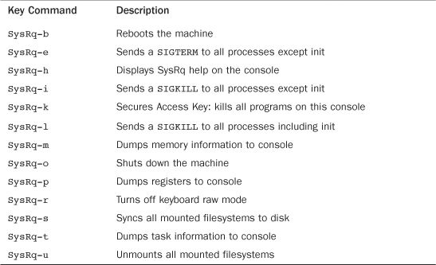

One factor that differentiates kernel development from user-space development is the hardship associated with debugging. It is difficult, relative to user-space, to debug the kernel. To complicate the matter, the stakes are much higher. A fault in the kernel can bring down the whole system.
Success in debugging the kernel—and ultimately, success in kernel development as a whole—is largely a function of your experience and understanding of the operating system. Sure, looks and charm help, too, but to successfully debug kernel issues, you need to understand the kernel. This chapter looks at approaches to debugging the kernel.
Kernel debugging is often a long, head-scratching endeavor. Some bugs have perplexed the entire kernel development community for months. Fortunately, for every one of these laborious issues, there are many simple bugs with an equally simple fix. With luck, all your bugs will remain simple and trivial. You will not know that, however, until you start investigating. For that, you need
• A bug. It might sound silly, but you need a well-defined and specific bug. It helps if it is reliably reproducible (at least for someone), but unfortunately bugs are not always well behaved or well defined.
• A kernel version on which the bug exists. Knowing where the bug first appeared is even better. If you do not yet know that, this chapter can teach you a trick for quickly determining it.
• Knowledge of the associated kernel code or luck. Debugging the kernel is tricky, and the more you understand the surrounding code, the better.
Most of this chapter’s techniques presume that you can reliably reproduce the bug. Your success in debugging relies on your ability to duplicate the problem. If you cannot, fixing the bug is limited to conceptualizing the problem and finding a flaw in the code. This does often happen, but chances of success are obviously much larger if you can reproduce the problem.
It might seem strange that there are bugs that someone cannot reproduce. In user-space programs, bugs are quite often a straightforward affair. For example, doing foo makes my application dump core. Bugs in the kernel are often much less clear. The interactions between the kernel, user-space, and hardware are often quite delicate. Race conditions might rear their ugly heads only once in a million iterations of an algorithm. Poorly designed or even miscompiled code can result in acceptable performances on some systems but terrible performances on others. It is common for some specific configuration, on some random machine, under some odd workload, to trigger a bug otherwise unseen. The more information you have when tackling a bug, the better. Many times, if you can reliably reproduce the bug, you are more than halfway home.
Bugs in the kernel vary widely. They occur for myriad reasons and manifest themselves in just as many forms. Bugs range from clearly incorrect code (for example, not storing the correct value in the proper place) to synchronization errors (not properly locking a shared variable) to incorrectly managing hardware (sending the wrong operation to the wrong control register). They manifest themselves as everything from poor performance to incorrect behavior to corrupt data to a deadlocked system.
Often, it is a long chain of events that leads from the error in the code to the error witnessed by the user. For example, a shared structure without a reference count might cause a race condition. Without proper accounting, one process might free the structure whereas another process still wants to use it. Later on, the second process may attempt to use the no longer existent structure through a now invalid pointer. This might result in a NULL pointer dereference, reading of garbage data, or nothing bad at all (if the data was not yet overwritten). The NULL pointer dereference causes an oops, whereas the garbage data leads to corruption (and then bad behavior or an oops). The user reports the oops or incorrect behavior. The kernel developer must then work backward from the error and see that the data was accessed after it was freed, there was a race, and the fix is to add proper reference counting on the shared structure.
Debugging the kernel might sound difficult, but in reality, the kernel is not unlike any other large software project. The kernel does have unique issues, such as timing constraints and race conditions, which are a consequence of allowing multiple threads of execution inside the kernel.
The kernel print function printk() behaves almost identically to the C library printf() function. Indeed, throughout this book we have made use of few real differences. For most intentions, this is fine; printk() is simply the name of the kernel’s formatted print function. It does have some special features, however.
One property of printk() easily taken for granted is its robustness. The printk() function is callable from just about anywhere in the kernel at any time. It can be called from interrupt or process context. It can be called while any lock is held. It can be called simultaneously on multiple processors, yet it does not require the caller to hold a lock.
It is a resilient function. This is important because the usefulness of printk() rests on the fact that it is always there and always works.
A chink in the armor of printk()’s robustness does exist. It is unusable before a certain point in the kernel boot process, prior to console initialization. Indeed, if the console is not initialized, where is the output supposed to go? This is normally not an issue, unless you debug issues early in the boot process (for example, in setup_arch(), which performs architecture-specific initialization). Such debugging is a challenge to begin with, and the absence of any sort of print method only compounds the problem.
There is some hope, but not a lot. Hardcore architecture hackers use the hardware that does work (say, a serial port) to communicate with the outside world. This is not fun for most people. The solution is a printk() variant that can output to the console early in the boot process: early_printk(). The behavior is the same as printk(), only the name and its capability to work earlier are changed. This is not a portable solution, however, because not all supported architectures have such a method implemented. It might be your best hope, however, if the architecture you use does implement it—most, including x86, do.
Unless you need to write to the console early in the boot process, you can rely on printk() to always work.
The major difference in usage between printk() and printf() is the capability of the former to specify a loglevel. The kernel uses the loglevel to decide whether to print the message to the console. The kernel displays all messages with a loglevel below a specified value on the console.
You specify a loglevel like this:
printk(KERN_WARNING "This is a warning!\n");
printk(KERN_DEBUG "This is a debug notice!\n");
printk("I did not specify a loglevel!\n");
The KERN_WARNING and KERN_DEBUG strings are simple defines found in <linux/kernel.h>. They expand to a string such as “<4>” or “<7>” that is concatenated onto the front of the printk() message. The kernel then decides which messages to print on the console based on this specified loglevel and the current console loglevel, console_loglevel. Table 18.1 is a full listing of the available loglevels.
Table 18.1. Available Loglevels
If you do not specify a loglevel, it defaults to DEFAULT_MESSAGE_LOGLEVEL, which is currently KERN_WARNING. Because this value might change, you should always specify a loglevel for your messages.
The kernel defines the most important loglevel, KERN_EMERG, as <0>, and it defines KERN_DEBUG, the least critical loglevel, as <7>. For example, after the preprocessor is done, the previous examples resemble the following:
printk("<4>This is a warning!\n");
printk("<7>This is a debug notice!\n");
printk("<4>did not specify a loglevel!\n");
The avenue that you take with your printk() loglevels is up to you. Of course, normal messages that you intend to keep around should have the appropriate loglevel. But the debugging messages you sprinkle everywhere when trying to get a handle on a problem—admit it, we all do it and it works—can have any loglevel you want. One option is to leave your default console loglevel where it is and make all your debugging messages KERN_CRIT or so. Conversely, you can make the debugging messages KERN_DEBUG and change your console loglevel. Each has pros and cons; you decide.
Kernel messages are stored in a circular buffer of size LOG_BUF_LEN. This size is configurable at compile time via the CONFIG_LOG_BUF_SHIFT option. The default for a uniprocessor machine is 16KB. In other words, the kernel can simultaneously store 16KB of kernel messages. If the message queue is at this maximum and another call to printk() is made, the new message overwrites the oldest one. The log buffer is called circular because the reading and writing occur in a circular pattern.
Using a circular buffer has multiple advantages. Because it is easy to simultaneously write to and read from a circular buffer, even interrupt context can easily use printk(). Furthermore, it makes log maintenance easy. If there are too many messages, new messages simply overwrite the older ones. If there is a problem that results in the generation of many messages, the log simply overwrites itself in lieu of uncontrollably consuming memory. The lone disadvantage of a circular buffer—the possibility of losing messages—is a small price to pay for the simplicity and robustness it affords.
syslogd and klogdOn a standard Linux system, the user-space klogd daemon retrieves the kernel messages from the log buffer and feeds them into the system log file via the syslogd daemon. To read the log, the klogd program can either read the /proc/kmsg file or call the syslog() system call. By default, it uses the /proc approach. In either case, klogd blocks until there are new kernel messages to read. It then wakes up, reads any new messages, and processes them. By default, it sends the messages to the syslogd daemon.
The syslogd daemon appends all the messages it receives to a file, which is by default /var/log/messages. It is configurable via /etc/syslog.conf.
You can have klogd change the console loglevel when it loads by specifying the -c flag when you start it.
printf() and printk()When you first start developing kernel code, you most likely will often transpose printf() for printk(). This transposition is only natural, as you cannot deny years of repetition using printf() in user-space development. With luck, this mistake will not last long because the repeated linker errors will eventually grow rather annoying.
Someday, you might find yourself accidentally using printk() instead of printf() in your user-space code. When that day comes, you can say you are a true kernel hacker.
An oops is the usual way a kernel communicates to the user that something bad happened. Because the kernel is the supervisor of the entire system, it cannot simply fix itself or kill itself as it can when user-space goes awry. Instead, the kernel issues an oops. This involves printing an error message to the console, dumping the contents of the registers, and providing a back trace. A failure in the kernel is hard to manage, so the kernel must jump through many hoops to issue the oops and clean up after itself. Often, after an oops the kernel is in an inconsistent state. For example, the kernel could have been in the middle of processing important data when the oops occurred. It might have held a lock or been in the middle of talking to hardware. The kernel must gracefully back out of its current context and try to resume control of the system. In many cases, this is not possible. If the oops occurred in interrupt context, the kernel cannot continue and it panics. A panic results in an instant halt of the system. If the oops occurred in the idle task (pid zero) or the init task (pid one), the result is also a panic because the kernel cannot continue without these important processes. If the oops occurs in any other process, however, the kernel kills the process and tries to continue executing.
An oops might occur for multiple reasons, including a memory access violation or an illegal instruction. As a kernel developer, you will often deal with (and undoubtedly cause) oopses.
What follows is an oops example from a PPC machine, in the timer handler of the tulip network interface card:
PC users might marvel at the number of registers (a whopping 32!). An oops on x86-32, which you might be more familiar with, is a little simpler. The important information, however, is identical for all the architectures: the contents of the registers and the back trace.
The back trace shows the exact function call chain leading up to the problem. In this case, you can see exactly what happened: The machine was idle and executing the idle loop, cpu_idle(), which calls default_idle() in a loop. The timer interrupt occurred, which resulted in the processing of timers. A timer handler, the tulip_timer() function, was executed, which performed a NULL pointer dereference. You can even use the offsets (those numbers such as 0x128/0x1c4 to the right of the functions) to find exactly the offending line.
The register contents can be equally useful, although less commonly so. With a decoded copy of the function in assembly, the register values help you re-create the exact events leading to the problem. Seeing an unexpected value in a register might shine some light on the root of the issue. In this case, you can see which registers held NULL (a value of all zeros) and discover which variable in the function had the unexpected value. In situations such as this, the problem is often a race—in this case, between the timer and some other part of this network card. Debugging a race condition is always a challenge.
ksymoopsThe previous oops is said to be decoded because the memory addresses are translated into the functions they represent. An undecoded version of the previous oops is shown here:
The addresses in the back trace need to be converted into symbolic names. This is done via the ksymoops command in conjunction with the System.map generated during kernel compile. If you use modules, you also need some module information. ksymoops tries to figure out most of this information, so you can usually invoke it via
ksymoops saved_oops.txt
The program then spits out a decoded version of the oops. If the default information ksymoops uses is unacceptable, or you want to provide alternative locations for the information, the program understands various options. ksymoops’ manual page has a lot of information that you should read before using it. The ksymoops program most likely came with your distribution.
kallsymsThankfully, dealing with ksymoops is no longer a requirement. This is a big deal, because although developers might have had little problem using it, end users often mismatched System.map files or failed to decode oopses altogether.
The 2.5 development kernel introduced the kallsyms feature, which is enabled via the CONFIG_KALLSYMS configuration option. This option stores in the kernel the symbolic name of function addresses mapped into the kernel image so that the kernel can print decoded back traces. Consequently, decoding oopses no longer requires System.map or ksymoops. On the downside, the size of the kernel increases a bit because the address-to-symbol mappings must reside in permanently mapped kernel memory. It is worth the memory use, however, during not only development but also deployment. The configuration option CONFIG_KALLSYMS_ALL additionally stores the symbolic name of all symbols, not only functions. This is generally needed only by specialized debuggers. The CONFIG_KALLSYMS_EXTRA_PASS option causes the kernel build process to make a second pass over the kernel’s object code. It is useful only when debugging kallsyms itself.
Multiple configure options that you can set during compile to aid in debugging and testing kernel code are available. These options are in the Kernel Hacking menu of the Kernel Configuration Editor. They all depend on CONFIG_DEBUG_KERNEL. When hacking on the kernel, consider enabling as many of these options as practical.
Some of the options are rather useful, enabling slab layer debugging, high-memory debugging, I/O mapping debugging, spin-lock debugging, and stack-overflow checking. One of the most useful settings, however, is sleep-inside-spinlock checking, which actually does much more.
Starting with 2.5, the kernel has an excellent infrastructure for detecting all sorts of atomicity violations. Recall from Chapter 9, “An Introduction to Kernel Synchronization,” that atomic refers to something’s capability to execute without division; the code completes without interruption or it does not complete at all. Code that holds a spin lock or has disabled kernel preemption is atomic. Code cannot sleep while atomic—sleeping while holding a lock is a recipe for deadlock.
Thanks to kernel preemption, the kernel has a central atomicity counter. The kernel can be set such that if a task sleeps while atomic, or even does something that might sleep, the kernel prints a warning and provides a back trace. Potential bugs that are detectable include calling schedule() while holding a lock, issuing a blocking memory allocation while holding a lock, or sleeping while holding a reference to per-CPU data. This debugging infrastructure catches a lot of bugs and is highly recommended.
The following options make the best use of this feature:
CONFIG_PREEMPT=y
CONFIG_DEBUG_KERNEL=y
CONFIG_KALLSYMS=y
CONFIG_DEBUG_SPINLOCK_SLEEP=y
A number of kernel routines make it easy to flag bugs, provide assertions, and dump information. Two of the most common are BUG() and BUG_ON(). When called, they cause an oops, which results in a stack trace and an error message dumped to the kernel. Why these statements cause an oops is architecture-dependent. Most architectures define BUG() and BUG_ON() as illegal instructions, which result in the desired oops. You normally use these routines as assertions, to flag situations that should not happen:
if (bad_thing)
BUG();
BUG_ON(bad_thing);
Most kernel developers believe that BUG_ON() is easier to read and more self-documenting compared to BUG(). Also, BUG_ON() wraps its assertion in an unlikely() statement. Do note that some developers have discussed the idea of having an option to compile BUG_ON() statements away, saving space in embedded kernels. This means that your assertion inside a BUG_ON() should not have any side effects. The macro BUILD_BUG_ON() performs the same purpose, but at compile time. If the provided statement evaluates to true at compile time, the compilation aborts with an error.
A more critical error is signaled via panic(). A call to panic() prints an error message and then halts the kernel. Obviously, you want to use it only in the worst of situations:
if (terrible_thing)
panic("terrible_thing is %ld!\n", terrible_thing);
Sometimes, you just want a simple stack trace issued on the console to help you in debugging. In those cases, dump_stack() is used. It simply dumps the contents of the registers and a function back trace to the console:
if (!debug_check) {
printk(KERN_DEBUG "provide some information...\n");
dump_stack();
}
SysRq KeyA possible lifesaver is the Magic SysRq key, which is enabled via the CONFIG_MAGIC_SYSRQ configure option. The SysRq (system request) key is a standard key on most keyboards. On the i386 and PPC, it is accessible via Alt+PrintScreen. When this configure option is enabled, special combinations of keys enable you to communicate with the kernel regardless of what else it is doing. This enables you to perform some useful tasks in the face of a dying system.
In addition to the configure option, there is a sysctl to toggle this feature on and off. To turn it on:
echo 1 > /proc/sys/kernel/sysrq
From the console, you can hit SysRq-h for a list of available options. SysRq-s syncs dirty buffers to disk, SysRq-u unmounts all filesystems, and SysRq-b reboots the machine. Issuing these three key combinations in a row is a safer way to reboot a dying machine than simply hitting the machine reset switch.
If the machine is badly locked, it might not respond to any Magic SysRq combinations, or it might fail to complete a given command. With luck, however, these options might save your data or aid in debugging. Table 18.2 is a listing of the supported SysRq commands.
Table 18.2. Supporting SysRq Commands

The file Documentation/sysrq.txt in the kernel source tree has more information. The actual implementation is in drivers/char/sysrq.c. The Magic SysRq Key is a vital tool for aiding in debugging or saving a dying system. Because it provides powerful capabilities to any user on the console, however, you should exercise caution on important machines. For your development machine, however, it is a great help.
Many kernel developers have long demanded an in-kernel debugger. Unfortunately, Linus does not want a debugger in his tree. He believes that debuggers lead to bad fixes by misinformed developers. No one can argue with his logic—a fix derived from real understanding of the code is certainly more likely to be correct. Nonetheless, plenty of kernel developers want an official in-kernel debugger. Because it is unlikely to happen anytime soon, a number of patches have arisen that add kernel-debugging support to the standard Linux kernel. Despite being external unofficial patches, these tools are quite well featured and powerful. Before you delve into these solutions, however, it’s a good idea to look at how much help the standard Linux debugger, gdb, can give you.
gdbYou can use the standard GNU debugger to glimpse inside a running kernel. Starting the debugger on the kernel is about the same as debugging a running process:
gdb vmlinux /proc/kcore
The vmlinux file is the uncompressed kernel image stored in the root of the build directory, not the compressed zImage or bzImage.
The optional /proc/kcore parameter acts as a core file, to let gdb actually peek into the memory of the running kernel. You need to be root to read it.
You can issue just about any of the gdb commands for reading information. For example, to print the value of a variable:
p global_variable
To disassemble a function:
disassemble function
If you compile the kernel with the -g flag (add -g to the CFLAGS variable in the kernel Makefile), gdb can provide much more information. For example, you can dump the contents of structures and follow pointers. You also get a much larger kernel, so do not routinely compile with debugging information included.
Unfortunately, this is about the limit of what gdb can do. It cannot modify kernel data in any way. It is unable to single-step through kernel code or set breakpoints. The inability to modify kernel data structures is a large downside. Although it is undoubtedly useful for it to disassemble functions on occasion, it would be much more useful if it could modify data, too.
kgdbkgdb is a patch that enables gdb to fully debug the kernel remotely over a serial line. It requires two computers. The first runs a kernel patched with kgdb. The second debugs the first over the serial line (a null modem cable connecting the two machines) using gdb. With kgdb, the entire feature set of gdb is accessible: reading and writing any variables, settings breakpoints, setting watch points, single stepping, and so on! Special versions of kgdb even enable function execution.
Setting up kgdb and the serial line is a little tricky, but when complete, debugging is simple. The patch installs plenty of documentation in Documentation/—check it out.
Different people maintain the kgdb patch for various architectures and kernel releases. Searching online is your best bet for finding a patch for a given kernel.
As you gain experience in kernel debugging, you gain little tricks to help you poke and probe the kernel for answers. Because kernel debugging can prove rather challenging, every little tip and trick helps. Let’s look at a couple.
If the code you are developing is process-related, sometimes you can develop alternative implementations without breaking the existing code. This is helpful if you are rewriting an important system call and would like a fully functional system with which to debug it. For example, assume you are rewriting the fork() algorithm to take advantage of an exciting new feature. Unless you get everything right on the first try, it would not be easy to debug the system: A nonfunctioning fork() system call is certain to result in a nonfunctioning system. As always, there is hope.
Often, it is safe to keep the remaining algorithm in place and construct your replacement on the side. You can achieve this by using the user id (UID) as a conditional with which to decide which algorithm to use:
if (current->uid != 7777) {
/* old algorithm .. */
} else {
/* new algorithm .. */
}
All users except UID 7777 will use the old algorithm. You can create a special user, with UID 7777, for testing the new algorithm. This makes it much easier to test critical process-related code.
If the code in question is not in process context, or if you want a more global method of controlling the feature, you can use a condition variable. This approach is even simpler than using the UID. Simply create a global variable and use it as a conditional check in your code. If the variable is zero, you follow one code path. If it is nonzero, you follow another. The variable can be set via an interface you export or a poke from the debugger.
Sometimes you want to get a feel for how often a specific event occurs. Sometimes you want to compare multiple events and generate some ratios for comparison. You can do this easily by creating statistics and a mechanism to export their values.
For instance, say you want to look at the occurrence of foo and the occurrence of bar. In a file, ideally the one where these events occur, declare two global variables:
unsigned long foo_stat = 0;
unsigned long bar_stat = 0;
For each occurrence of these events, increment the appropriate variable. Then export the data however you feel fit. For example, you can create a file in /proc with the values or write a system call. Alternatively, simply read them via a debugger.
Note that this approach is not particularly SMP-safe. Ideally, you would use atomic operations. For a trivial one-time debugging statistic, however, you normally do not need such protection.
Often, you want to stick some debugging checks (with some corresponding print statements) in an area to sniff out a problem. In the kernel, however, some functions are called many times per second. If you stick a call to printk() in such a function, the system is overwhelmed with debugging output and quickly grows unusable.
Two relatively simple tricks exist to prevent this problem. The first is rate limiting, which is useful when you want to watch the progression of an event, but the event occurs rather often. To prevent a deluge of debugging output, you print your debug message (or do whatever you are doing) only every few seconds. For example
In this example, the debug message is printed at most every 2 seconds. This prevents any flood of information on the console, and the computer remains usable. You might need the rate limiting to be larger or smaller, depending on your needs.
If you are only using printk(), you can use a special function to rate limit your printk() calls:
if (error && printk_ratelimit())
printk(KERN_DEBUG "error=%d\n", error);
The printk_ratelimit() function returns zero if rate limiting is in effect and nonzero otherwise. By default, the function allows only one message every 5 seconds but allows an initial burst of up to ten messages before that cap is enforced. These parameters are tunable via the printk_ratelimit and printk_ratelimit_burst sysctl, respectively.
Another sticky situation arises if you try to determine if a codepath is exercised in a particular way. Unlike the previous example, you do not want real-time notification. This is an especially sticky situation if it is of the sort where if it is triggered once, it is triggered a lot. The solution here is not to rate limit the debugging, but occurrence limit it:
static unsigned long limit = 0;
if (limit < 5) {
limit++;
printk(KERN_ERR "blah blah blah\n");
}
This example caps the debugging output to five. After five such messages, the conditional is always false.
In both examples, the variables should be static and local to the function, as shown. This enables the variable’s values to persist across function calls.
Neither of these examples are SMP- or preempt-safe, although a quick switch to atomic operators makes them safe. For temporary debugging checks, you often need not be so fastidious.
It is usually useful to know when a bug was introduced into the kernel source. If you know that a bug occurred in version 2.6.33, but not 2.4.29, you have a clear picture of the changes that occurred to cause the bug. The bug fix is often as simple as reverting or otherwise fixing the bad change.
Many times, however, you do not know what kernel version introduced the bug. You know that the bug is in the current kernel, but it seemed to have always been in the current kernel! With a little effort, you can find the offending change. With the change in hand, the bug fix is usually near.
To start, you need a reliably reproducible problem—preferably, a bug that you can verify immediately after boot. Next, you need a known-good kernel. You might already know this. For example, if you know a couple months back the kernel worked, grab a kernel from that period. If you are wrong, try an earlier release. It shouldn’t be too hard to find a kernel without the bug.
Next, you need a known-bad kernel. To make things easier, start with the earliest kernel you know to have the bug.
Now, you begin a binary search from the known-bad kernel down to the known-good kernel. Let’s look at an example. Assume the latest known-good kernel is 2.6.11 and the earliest known-bad is 2.6.20. Start by picking a kernel in the middle, such as 2.6.15. Test 2.6.15 for the bug. If 2.6.15 works, you know the problem began in a later kernel, so try a kernel in between 2.6.15 and 2.6.20—say, 2.6.17. On the other hand, if 2.6.15 does not work, you know the problem is in an earlier kernel, so you might try 2.6.13. Rinse and repeat.
Eventually you should narrow the problem down to two subsequently released kernels—one of which has the bug and one of which does not. You then have a clear picture of the changes that caused the bug. This approach beats looking at every kernel!
The git source management tool provides a useful mechanism for performing binary searches. If you use git to control your copy of the Linux source tree, it can automate the binary search process. Moreover, the git tool performs the binary search at the revision level, actually pinpointing the specific commit that introduced the bug. Unlike many git-related tasks, binary searching with git is not hard. To start, you tell git you want to begin a binary search:
$ git bisect start
You then provide git with the earliest broken revision:
$ git bisect bad <revision>
If the latest version of the kernel is your known-earliest offender, you do not need to provide a revision:
$ git bisect bad
You then provide git with the latest working revision:
$ git bisect good v2.6.28
Git then automatically checks out the Linux source tree bisecting the provided bad and good revisions. You then compile, run, and test that revision. If it works, you run:
$ git bisect good
If it does not work—that is, if the given kernel revision demonstrates the bug—you run
$ git bisect bad
On each command, git again bisects the tree on a per-revision basis, returning the next bisection as needed. You repeat the process until there are no more bisections possible. Git then prints the offending revision number.
This can be a long process, but git does make it easy. If you think you know the source of the bug—say, it is clear in x86-specific boot code—you can instruct git to only bisect among commits touching a specified list of directories:
$ git bisect start — arch/x86
Perhaps you have tried everything that you can think of. You have slaved over the keyboard for countless hours—indeed, perhaps countless days—and the solution still escapes you. If the bug is in the mainstream Linux kernel, you can always elicit the help of the other developers in the kernel community.
A brief, but complete, email sent to the kernel mailing list describing the bug and your findings might help aid in discovery of a solution. After all, no one likes bugs.
Chapter 20, “Patches, Hacking, and the Community,” specifically addresses the community and its primary forum, the Linux Kernel Mailing List (LKML).
This chapter covered debugging the kernel, the process of determining why implementation diverges from intention. We looked at several techniques, from built-in kernel debug infrastructure to debuggers, from logging to binary searching with git. Because debugging the Linux kernel can be a significantly more difficult task than debugging a user-space application, the material in this chapter is crucial to anyone intending to actually write kernel code.
In the next chapter, we cover another general topic: portability in the Linux kernel. Onward!